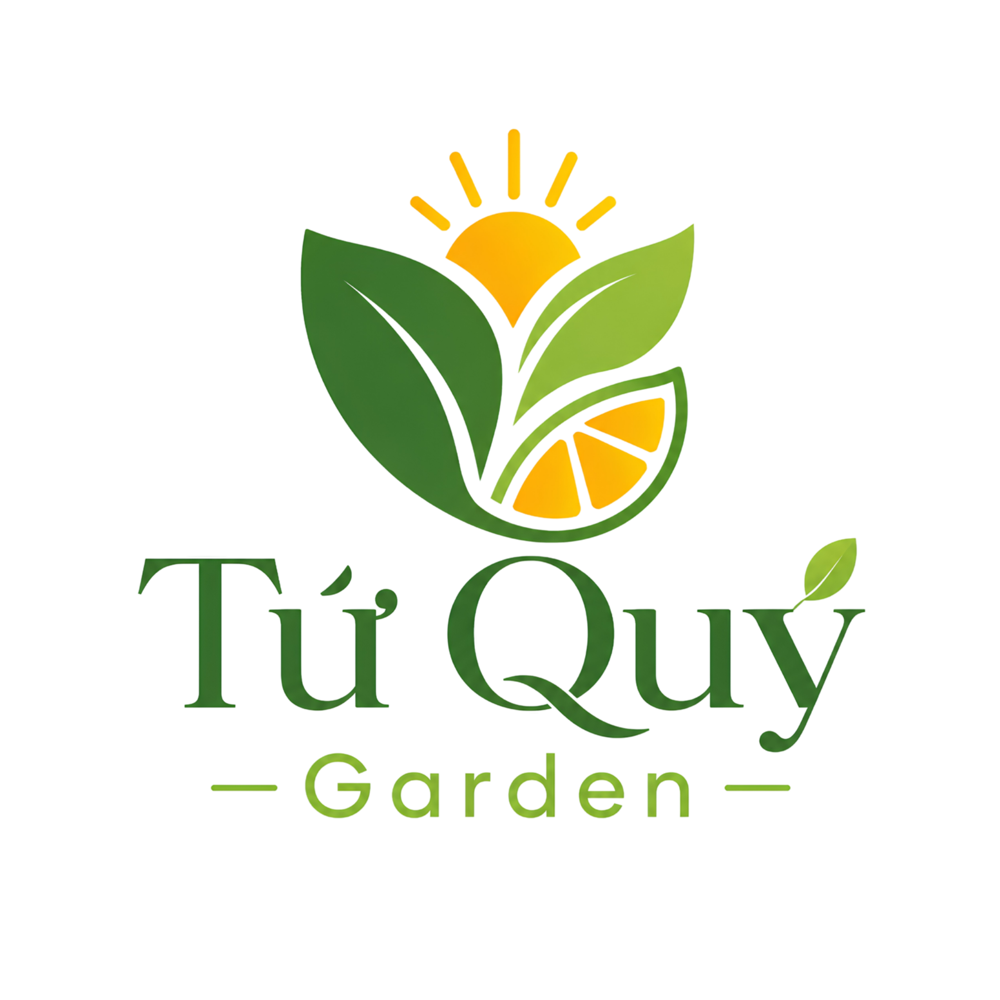

“Trái tươi bốn mùa, hạt lành mỗi ngày” – Chúng tôi mang tinh túy từ các vườn trái cây trĩu quả của dải đất hình chữ S và nguồn hạt dinh dưỡng organic lành mạnh tới bữa ăn gia đình Việt. “Fresh seasonal fruits, healthy seeds daily” – We deliver the pure essence of Vietnamese orchards and organic seeds to every Vietnamese family.
Tứ Quý Garden được thành lập bởi một nhóm bạn trẻ có tình yêu sâu sắc với nông sản Việt Nam và mong muốn tìm kiếm một giải pháp ăn sạch, sống khỏe tự nhiên cho nhịp sống hiện đại bận rộn. Chúng tôi nhận thấy nước mình có nguồn trái cây nhiệt đới phong phú bậc nhất, nhưng quy trình trung gian vận chuyển phức tạp khiến chất lượng bị hao hụt và nguồn gốc canh tác bị mập mờ. Tứ Quý Garden was founded by young pioneers with a deep passion for Vietnamese agriculture and a desire to create a clean, healthy eating solution for busy modern lives. We realized that Vietnam has some of the richest tropical fruits, but complex logistics make the quality decrease and farm origins unclear.
Từ đó, Tứ Quý Garden ra đời với mô hình Farm-to-Table số hóa. Chúng tôi trực tiếp hợp tác với các nhà vườn đạt tiêu chuẩn VietGAP tại địa phương, thiết lập quy trình kiểm định chất lượng chặt chẽ, đóng gói hữu cơ, số hóa mã lô truy xuất để mang lại những khay trái cây chín mọng, những hũ hạt sấy thơm lành đầy tin cậy nhất. Hence, Tứ Quý Garden introduces a digitized Farm-to-Table model. We directly collaborate with local VietGAP-standard orchards, implement strict quality inspections, package organically, and digitize batch codes to deliver the freshest ripe fruits and healthy baked seeds.

Kiến tạo lối sống khỏe mạnh và bền vững cho người tiêu dùng thông qua việc cung cấp các sản phẩm trái cây tươi theo mùa, hạt dinh dưỡng và granola organic chất lượng cao. Đồng thời, bảo vệ quyền lợi của người nông dân bằng cách nâng tầm giá trị nông sản Việt. Creating healthy, sustainable lifestyles by delivering seasonal fruits, nutritional seeds, and organic granolas. Simultaneously protecting local farmers' rights by enhancing Vietnamese agricultural values.
Trở thành biểu tượng thương hiệu uy tín hàng đầu Việt Nam về nông sản hữu cơ cao cấp, kết hợp công nghệ truy xuất nguồn gốc số hóa minh bạch 100%. Là cầu nối tin cậy đưa trái cây đặc sản vùng miền vươn xa và đồng hành cùng lối sống xanh sạch. Becoming Vietnam's leading trusted brand symbol for premium organic produce, integrated with 100% digitized traceable technology. Serving as a reliable bridge connecting regional specialties to tables and promoting green living.